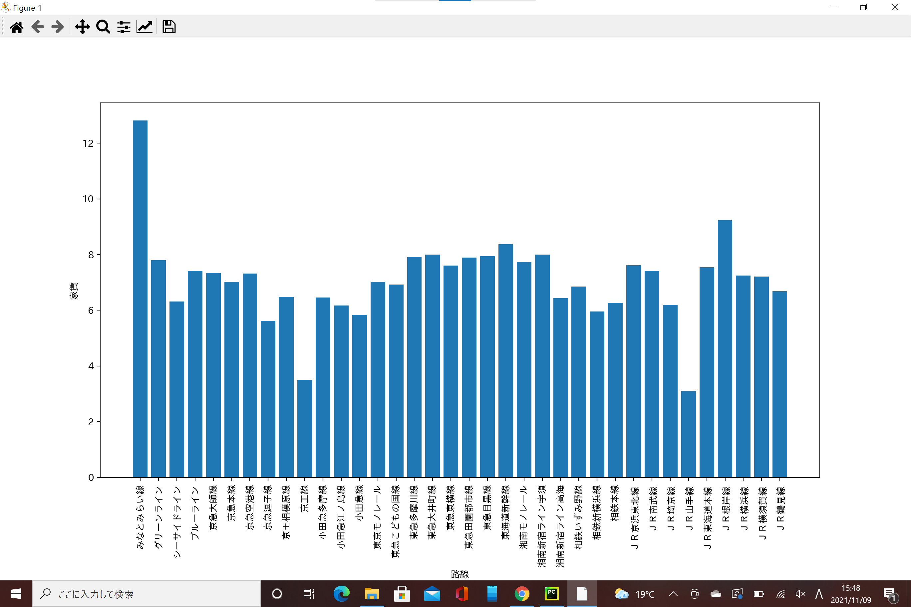
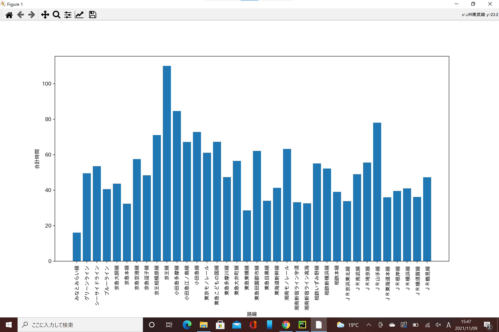
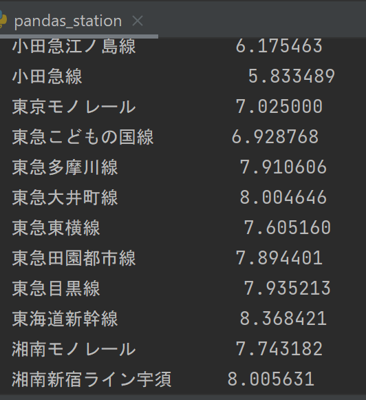
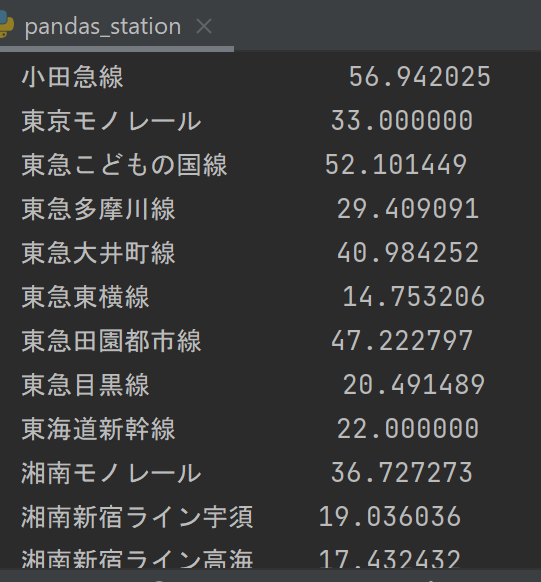
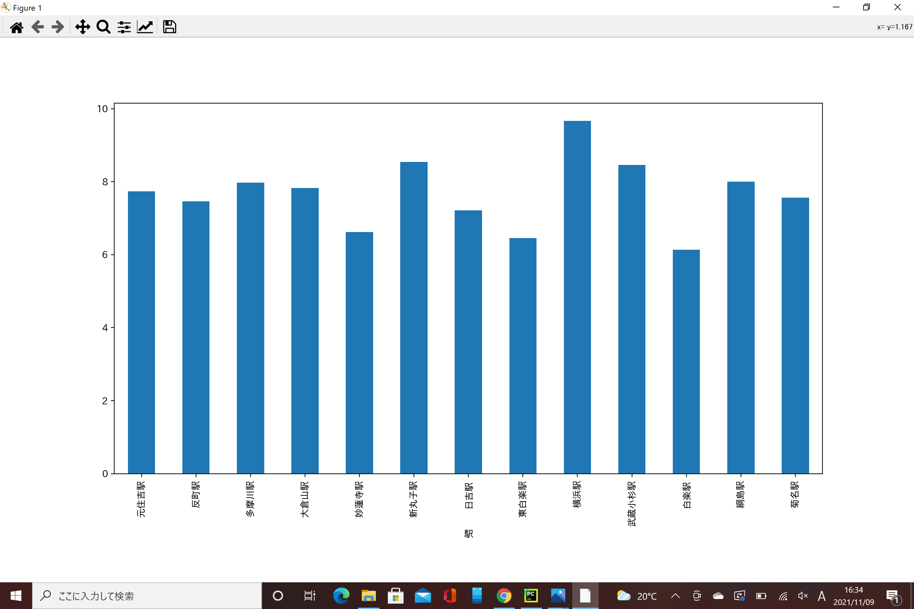
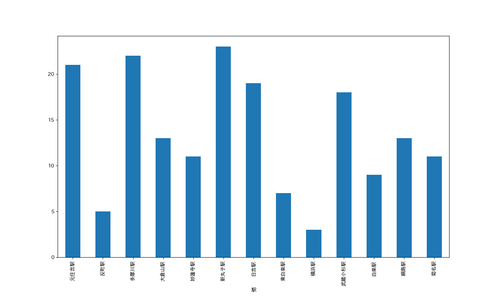
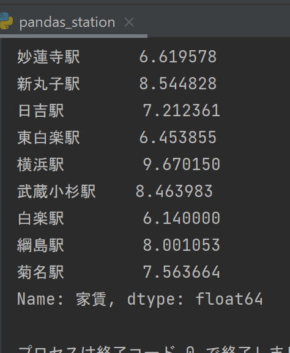
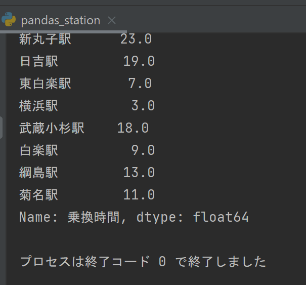

データサイエンス
今回私は「家賃」と「乗換時間」を重視して分析しました。
路線ごとによる分析
路線ごとによる家賃の差

家賃が極端に安い路線もありますね。ですが、目的地がみなとみらい駅であるので、みなとみらい駅から遠くては意味がありません。
次に路線ごとによる合計時間の差についてグラフを出します。
路線ごとによる合計時間の差

この２つのグラフから私は東急東横線の駅がみなとみらい駅からの時間も短く家賃も比較的安いのかなと考えました。
東急東横線のグラフ中の数値
 
東急東横線の駅について分析
今度は東急東横線の駅で家賃が安く、みなとみらい駅から時間が短い駅を分析していきたいと思います。
東急東横線の駅と家賃についてのグラフ
※縦軸が抜けていますが「家賃」です。
東急東横線の駅と乗換時間についてのグラフ
※縦軸が抜けていますが「乗換時間」です。
分析結果
この二つのグラフから白楽や東白楽の付近のエリアがが家賃も安くみなとみらい駅からも近いと分析しました。
また、横浜キャンパスにも近いので、横浜キャンパスでしか行っていない、一人暮らしの方向けの食品や生活用品の支援プロジェクトを受けやすくなるとも考えました。
グラフの中の白楽と東白楽の数値(左が家賃平均、右が乗り換え時間平均）

ソースコード
- import pandas as pd # データ分析に用いるライブラリ
- import matplotlib.pyplot as plt # グラフ表示に用いるライブラリ
- pd.set_option('display.unicode.east_asian_width', True) # 表示のずれを少し緩和
- plt.rcParams['font.family'] = 'IPAexGothic' # グラフ表示におけるフォントの指定
- data_path = "./data.csv"
- df_data = pd.read_csv(data_path, encoding="utf-8-sig")
- df_mean = df_data.groupby("路線").mean()
- x = df_mean.index
- y = df_mean.loc[:, "家賃"]
- print(df_mean.loc[:, "家賃"])
- df_mean = df_data.groupby("路線").mean()
- x = df_mean.index
- y = df_mean.loc[:, "乗換時間"]
- print(df_mean.loc[:, "乗換時間"])
- print(df_data.groupby(["路線", "駅"]).mean().loc["東急東横線", "家賃"])
- df_data.groupby(["路線", "駅"]).mean().loc["東急東横線", "家賃"].plot.bar()
- plt.show()
- print(df_data.groupby(["路線", "駅"]).mean().loc["東急東横線", "乗換時間"])
- df_data.groupby(["路線", "駅"]).mean().loc["東急東横線", "乗換時間"].plot.bar()
- plt.show()